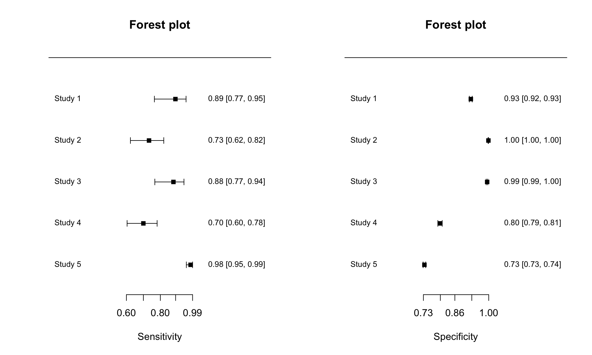
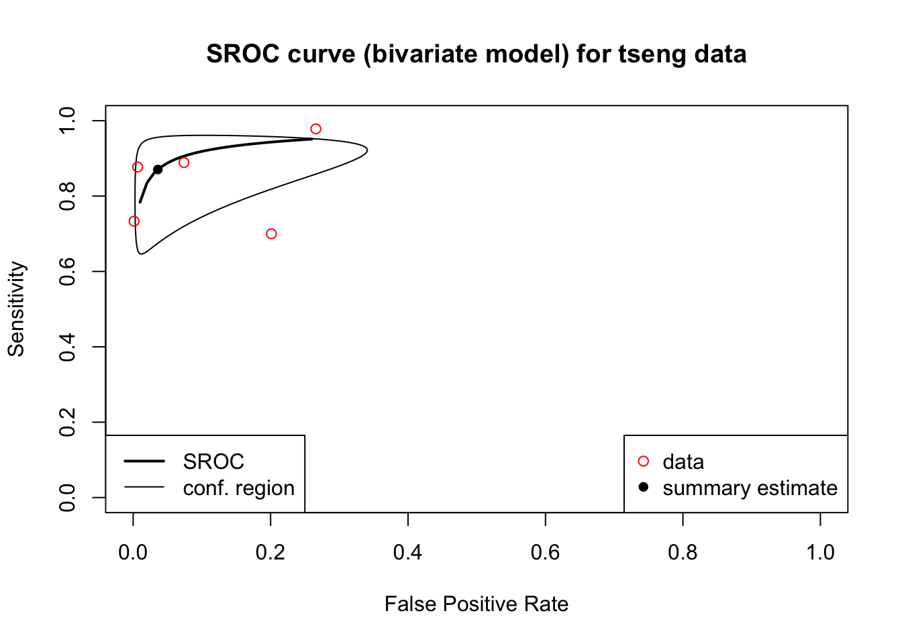

Exercise 2 - Tseng
As with Exercise 1, we need to read in the csv file first. Table 3.2 is the first 5 rows of Tseng data.
| id | TP | FP | FN | TN | country | male | smoker | sens | spec |
|---|---|---|---|---|---|---|---|---|---|
| Toyoda et al, 2008 | 40 | 528 | 5 | 6610 | Japan | 59 | 78 | 88.9 | 92.6 |
| Veronesi et al, 2008 | 55 | 7 | 20 | 5119 | Italy | 66 | 80 | 73.3 | 99.9 |
| Menezes et al, 2009 | 50 | 17 | 7 | 2592 | Canada | 54 | 87 | 87.7 | 99.3 |
| van Klaveren et al, 2009 | 70 | 1500 | 30 | 5957 | Dutch | 84 | 100 | 70.0 | 79.9 |
| Aberle et al, 2011 | 270 | 6921 | 6 | 19112 | American | 59 | 100 | 97.8 | 73.4 |
2a. Descriptive
First of all, use the madad command to descriptive summary of tseng data, and save the results in the object “madad.tseng”
## Descriptive summary of tseng with 5 primary studies.
## Confidence level for all calculations set to 95 %
## Using a continuity correction of 0.5 if applicable
##
## Diagnostic accuracies
## sens 2.5% 97.5% spec 2.5% 97.5%
## [1,] 0.889 0.765 0.952 0.926 0.920 0.932
## [2,] 0.733 0.624 0.820 0.999 0.997 0.999
## [3,] 0.877 0.768 0.939 0.993 0.990 0.996
## [4,] 0.700 0.604 0.781 0.799 0.790 0.808
## [5,] 0.978 0.953 0.990 0.734 0.729 0.739
##
## Test for equality of sensitivities:
## X-squared = 69.7, df = 4, p-value = 2.62e-14
## Test for equality of specificities:
## X-squared = 3415, df = 4, p-value = <2e-16
##
##
## Diagnostic OR and likelihood ratios
## DOR 2.5% 97.5% posLR 2.5% 97.5% negLR 2.5% 97.5%
## [1,] 100.15 39.36 254.8 12.02 10.53 13.71 0.120 0.053 0.274
## [2,] 2011.04 816.97 4950.3 537.01 252.97 1140.00 0.267 0.183 0.389
## [3,] 1089.08 432.45 2742.7 134.62 83.00 218.36 0.124 0.062 0.247
## [4,] 9.27 6.02 14.3 3.48 3.04 3.99 0.376 0.278 0.507
## [5,] 124.27 55.31 279.2 3.68 3.58 3.78 0.030 0.013 0.065
##
## Correlation of sensitivities and false positive rates:
## rho 2.5 % 97.5 %
## 0.268 -0.804 0.9302b. Forest plot
Then use the forest command to draw the forest plot. The split.screen function is used to split a plotting window into different rectangular sections called “screens”. Figure 3.3 is the forest plot of Tseng data.
split.screen(c(1,2))
screen(1)
forest(madad.tseng, type = "sens", xlab = "Sensitivity", cex = .8, snames = tseng$study_id)
screen(2)
forest(madad.tseng, type = "spec", xlab = "Specificity", cex = .8, snames = tseng$study_id)
close.screen(all.screens = T)

Figure 3.3: The forest plot of Tseng data.
2c. Bivariate Analysis
## Call: reitsma.default(data = tseng)
##
## Bivariate diagnostic random-effects meta-analysis
## Estimation method: REML
##
## Fixed-effects coefficients
## Estimate Std. Error z Pr(>|z|) 95%ci.lb 95%ci.ub
## tsens.(Intercept) 1.905 0.532 3.578 0.000 0.862 2.949
## tfpr.(Intercept) -3.289 1.075 -3.061 0.002 -5.396 -1.183
## sensitivity 0.870 - - - 0.703 0.950
## false pos. rate 0.036 - - - 0.005 0.234
##
## tsens.(Intercept) ***
## tfpr.(Intercept) **
## sensitivity
## false pos. rate
## ---
## Signif. codes: 0 '***' 0.001 '**' 0.01 '*' 0.05 '.' 0.1 ' ' 1
##
## Variance components: between-studies Std. Dev and correlation matrix
## Std. Dev tsens tfpr
## tsens 1.134 1.000 .
## tfpr 2.395 0.455 1.000
##
## logLik AIC BIC
## 12.656 -15.312 -13.799
##
## AUC: 0.951
## Partial AUC (restricted to observed FPRs and normalized): 0.909
##
## HSROC parameters
## Theta Lambda beta sigma2theta sigma2alpha
## 0.252 5.032 0.747 1.977 2.9582d. SROC
## SROC ##
plot(bi.tseng, sroclwd = 2, main = "SROC curve (bivariate model) for tseng data", pch = 16)
points(fpr(tseng), sens(tseng), pch = 1, col = "red")
legend("bottomright", c("data", "summary estimate"), pch = c(1,16), col = c("red","black"))
legend("bottomleft", c("SROC", "conf. region"), lwd = c(2,1))

Figure 3.4: The SROC of Tseng data.